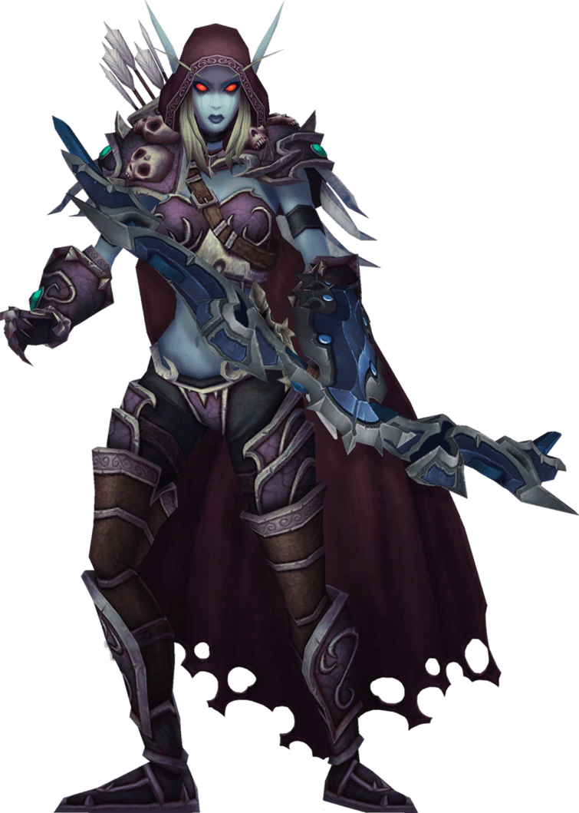
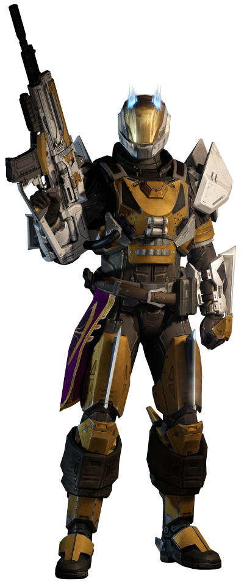

Open Worlds Community is an online platform that helps gamers find the game
that is right for them!
We currently support MMO games.
Open Worlds Community is an online platform that helps gamers find the game
that is right for them!
We currently support MMO games.
 Open Worlds Community aims to help you find the game that is right for you while also giving you the opportunity to connect with fellow gamers! We offer the necessary information that is vital in telling whether you will like a game or not. We also offer the opportunity for you to interact and meet other gamers just like you. Please check out the games page to see some of the content.
 On the games page of our site, you will find information and recommendations of some of the best video games out there! We believe that it is always important to do research on games to find the one that is best for you. Currently, we offer information and links to all of the best MMO games out there. Go check it out and we hope that you find the game perfect game!
 Because Open Worlds Community is such a new website we only offer a limited amount of information on specific games and genres. In the near future,
we hope to bring more news and resources on different games. We always want to keep gamers interactions with each other one of the top priorities
of this community. We hope that this can be a place where you not only get connected with the best games but also some of the best people in the
gaming community.
Because Open Worlds Community is such a new website we only offer a limited amount of information on specific games and genres. In the near future,
we hope to bring more news and resources on different games. We always want to keep gamers interactions with each other one of the top priorities
of this community. We hope that this can be a place where you not only get connected with the best games but also some of the best people in the
gaming community.